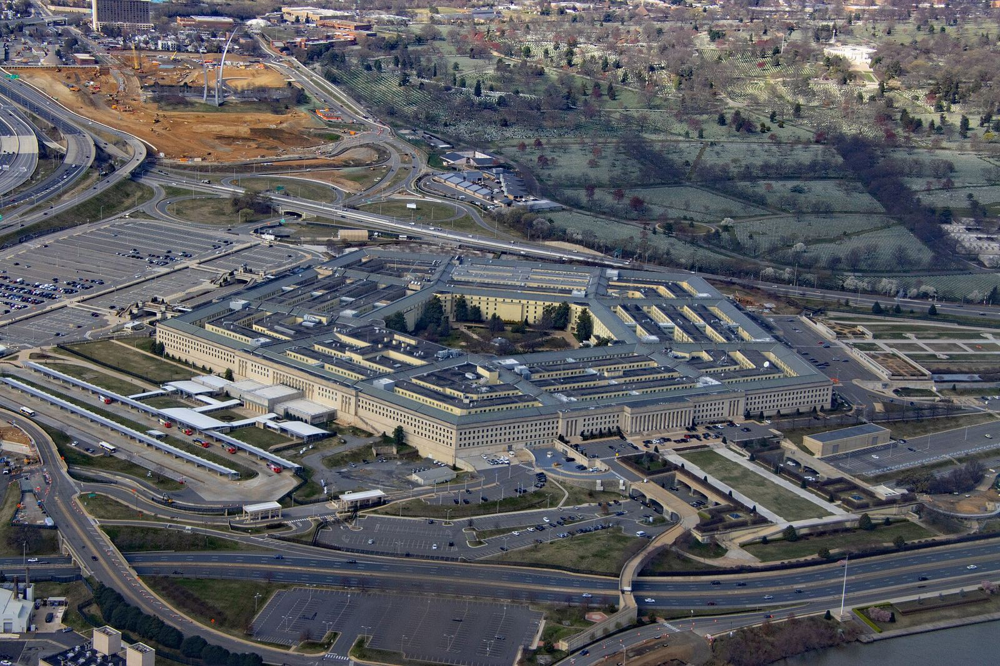

国防
五角大楼向 BBC 证实已停用 Anthropic 产品，消息人士称 Claude 上周仍在使用


BBC 2026 年 10 月 5 日报道，美国国防部一名官员在声明中表示，五角大楼「has ceased the use of Anthropic products」。国防部长 Hegseth 今年 2 月把 Anthropic 列为国家安全「供应链风险」，并宣布 8 月底前停用，BBC 称延迟原因不明。
「has ceased the use of Anthropic products」
据 BBC 采访的多名知情人士（包括前国防官员和承包商），直到上周，Claude 仍被国防部用于研究、分析、情报收集以及对伊朗的军事行动；它嵌在 Palantir 运营的 Maven Smart System 数据平台中，因此难以迅速移除。乔治城大学安全与新兴技术中心的 Lauren Kahn 说：「Once they become integrated it can be painful to remove them」。
报道回顾，五角大楼今年早些时候要求 Anthropic 移除 Claude 的安全护栏、向军方开放不受限使用，Anthropic 以大规模监控和自主武器为由拒绝，随后被列入供应链风险名单；该公司称此举「unprecedented and unlawful」并已起诉。Anthropic 发言人拒绝就国防部声明置评。BBC 还提到，特朗普上周两次在白宫会见 Anthropic CEO Dario Amodei。本稿只转述 BBC 的报道，其中的匿名信源说法未经本站独立核实。
来源
摘记，不是官方媒体。事实以所链出的原始报道为准。